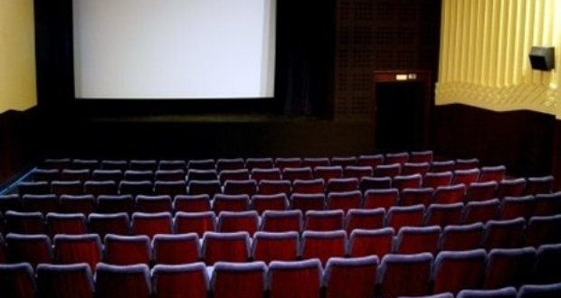
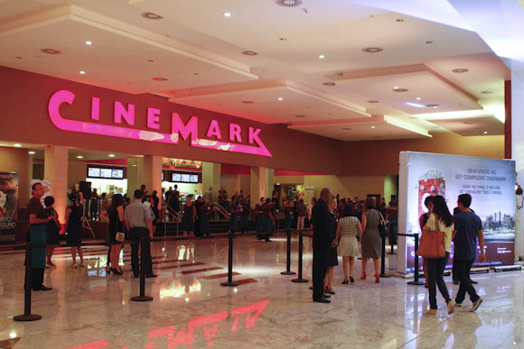

O cinema São Luiz, pertencente ao grupo de Luiz Severiano Ribeiro, foi inaugurado no
térreo do Edifício Duarte Coelho, no dia 7 de setembro de 1952, com modernas e luxuosas
instalações. Foi palco de grandes eventos, lançamentos de filmes e era um local muito
frequentado pela sociedade recifense.
Atualmente o São Luiz é prioritariamente um espaço de exibição da produção audiovisual
nacional e pernambucana, a preços populares e sessões com horários sensíveis às demandas
do grande público.
Endereço:
Rua da Aurora, 175, Boa Vista
Horário e preços:
O Cinema São Luiz funciona diariamente, exceto às segundas-feiras.
Os Ingressos custam R$ 4,00 (inteira) e R$ 2,00 (meia-entrada)
No cinema Multiplex do Shopping Boa Vista você tem diversão garantida. São seis salas
com uma estrutura tipo Stadium, que proporciona a visualização da tela em qualquer lugar da
sala, com som digital e uma programação variada de filmes. Além disso, o Multiplex Boa Vista
lhe oferece conforto e um excelente atendimento. Possui seis salas.
Preços:
Dia da Semana
Preço
Segundas
R$ 9,00
Terças até 17:00
R$ 15,00
Terças após 17:00
R$ 17,00
Quartas
R$ 14,00
Quinta a Domingo e Feriados
R$ 19,00
Moviemax Cine Rosa e Silva (ETC)

Localizado no Executive Trade Center, o Cine Rosa e Silva conta como diferencial com uma programação bastante diversificada.
Conta com um total de de 537 lugares distribuídos em 4 salas, sendo uma delas 3D.
Endereço
Avenida Rosa e Silva, 1460, Aflitos. Fone:(81) 3207-0100
Preços
Dia da Semana
Preço
2D
3D
Segundas
R$ 7,00
R$ 10,00
Quartas
R$ 8,00
R$ 10,00
Terças
R$ 16,00
R$ 20,00
Quinta a Domingo e Feriados
R$ 18,00
R$ 23,00
Cinemark Shopping Rio Mar

O Rio Mar Recife possui o melhor da programação do cinema nacional e internacional nas
modernas e confortáveis salas do Cinemark. São 12 espaços especiais, sendo oito disponíveis
no momento, preparados para a diversão e emoção de pessoas de todas as idades. Do total,
duas salas são vips, com poltronas reclináveis e atendimento personalizado.
Também há uma sala XD (Extreme Digital Cinema), com telas maiores e uma sonorização muito mais potente, o que proporciona aos espectadores a sensação de estarem imersos no filme.
Diversão e emoção. As 10 salas de cinema do Shopping Recife foram construídas
cuidadosamente para oferecerem uma boa opção de programação, sempre. Aqui, você
encontra os melhores filmes em cartaz e em vários horários.
Em abril de 2014 foram inauguradas três salas De Lux (com poltronas e serviço alimentício
diferenciado) e uma Imax, nas quais as telonas são, realmente, telonas.